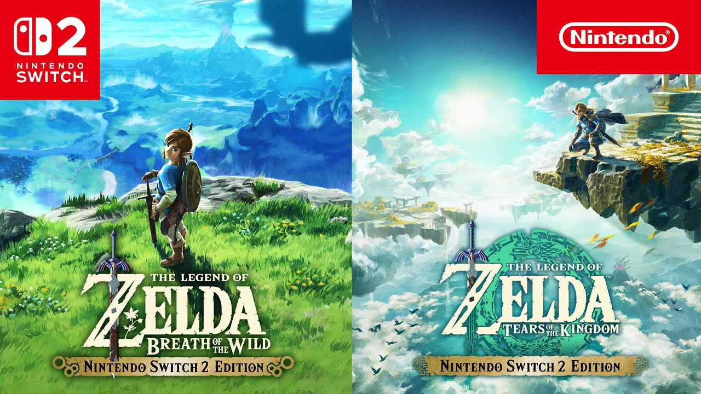

Nuevo Zelda anunciado
Nintendo confirmó la secuela de Breath of the Wild con lanzamiento en 2025. Se espera que el nuevo título expanda aún más el mundo abierto con nuevas mecánicas de exploración.
Nintendo confirmó la secuela de Breath of the Wild con lanzamiento en 2025. Se espera que el nuevo título expanda aún más el mundo abierto con nuevas mecánicas de exploración.
Sony filtró detalles de su nueva consola de próxima generación. Se rumorea que incluirá compatibilidad total con realidad virtual y retrocompatibilidad completa con PS5.
Microsoft anunció que Game Pass ahora incluirá títulos de estreno desde el día uno, junto con integración en la nube para jugar desde cualquier dispositivo.
Las ofertas de verano de Steam ya están disponibles, con descuentos de hasta 90% en títulos populares como The Witcher 3, Red Dead Redemption 2 y más.

El mundo de los E-Sports sigue en expansión. Este año, los torneos de League of Legends y Valorant registraron cifras récord de audiencia global.